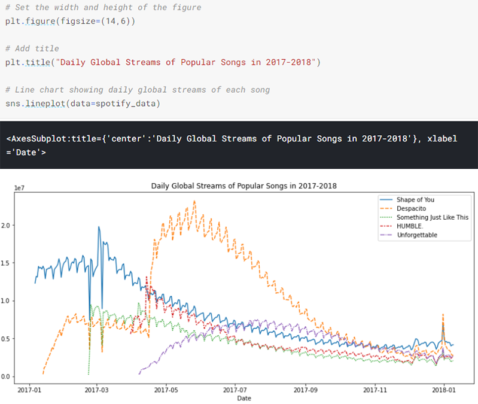
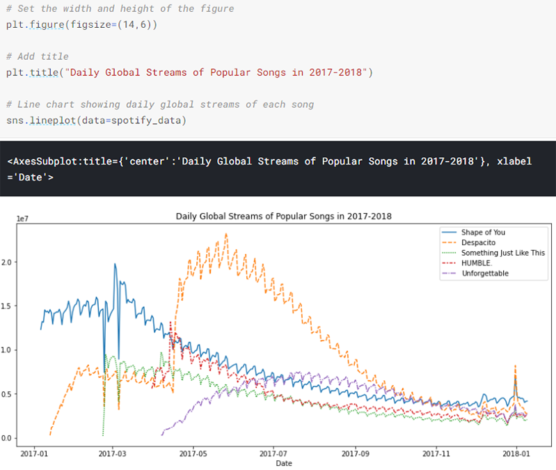
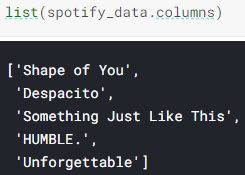
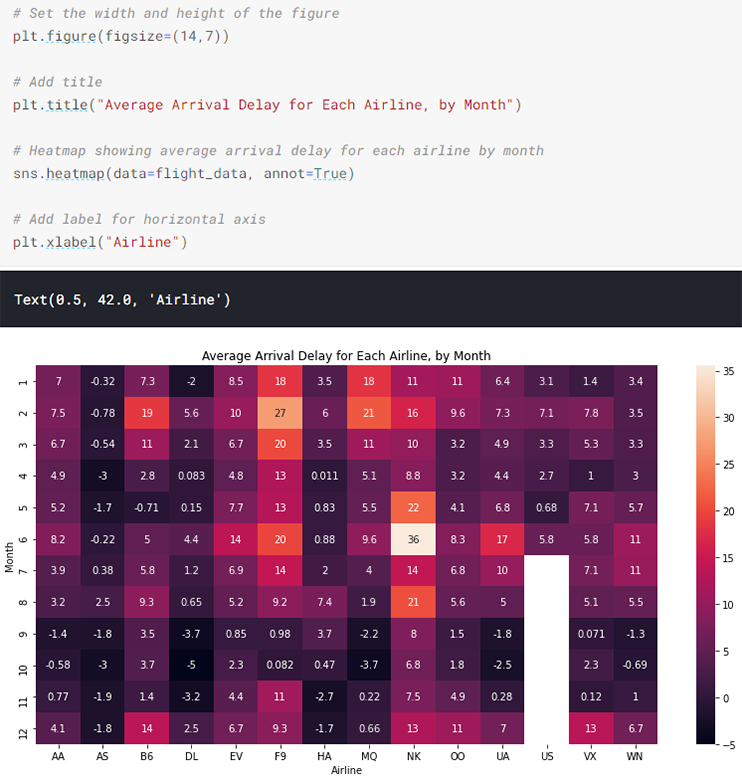
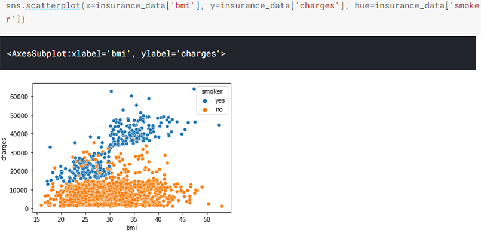
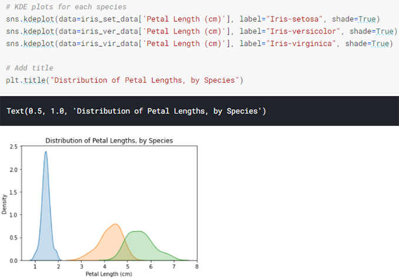

Data Visualization
Kaggle
Line chart:
 

Plot a subset of the data:

Bar chart:

You must select the indexing column with flight_data.index, and it is not possible to use flight_data['Month'] (which will return an error). This is because when we loaded the dataset, the "Month" column was used to index the rows. We always have to use this special notation to select the indexing column.
Heatmap:
Scatter plot:
To double-check the strength of this relationship, you might like to add a regression line, or the line that best fits the data:
Color-coded scatter plots (we can use scatter plots to display the relationships between (not two, but...) three variables):
Categorical scatter plots (we can adapt the design of the scatter plot to feature a categorical variable (like "smoker") on one of the main axes):
Distributions (We'll work with a dataset of 150 different flowers, or 50 each from three different species of iris (Iris setosa, Iris versicolor, and Iris virginica).)
Histogram (to create a histogram to see how petal length varies in iris flowers):
The next type of plot is a kernel density estimate (KDE) plot (you can think of it as a smoothed histogram, setting shade=True colors the area below the curve):
We'll create plots to understand differences between the species. To accomplish this, we begin by breaking the dataset into three separate files, with one for each species:
We use label= to set how each histogram will appear in the legend. In this case, the legend does not automatically appear on the plot. To force it to show (for any plot type), we can always use plt.legend():
One interesting pattern that can be seen in plots is that the plants seem to belong to one of two groups, where Iris versicolor and Iris virginica seem to have similar values for petal length, while Iris setosa belongs in a category all by itself. In fact, according to this dataset, we might even be able to classify any iris plant as Iris setosa (as opposed to Iris versicolor or Iris virginica) just by looking at the petal length: if the petal length of an iris flower is less than 2 cm, it's most likely to be Iris setosa.
Since it's not always easy to decide how to best tell the story behind your data, we've broken the chart types into three broad categories to help with this.
- Trends - A trend is defined as a pattern of change.
- sns.lineplot - Line charts are best to show trends over a period of time, and multiple lines can be used to show trends in more than one group.
- Relationship - There are many different chart types that you can use to understand relationships between variables in your data.
- sns.barplot - Bar charts are useful for comparing quantities corresponding to different groups.
- sns.heatmap - Heatmaps can be used to find color-coded patterns in tables of numbers.
- sns.scatterplot - Scatter plots show the relationship between two continuous variables; if color-coded, we can also show the relationship with a third categorical variable.
- sns.regplot - Including a regression line in the scatter plot makes it easier to see any linear relationship between two variables.
- sns.lmplot - This command is useful for drawing multiple regression lines, if the scatter plot contains multiple, color-coded groups.
- sns.swarmplot - Categorical scatter plots show the relationship between a continuous variable and a categorical variable.
- Distribution - We visualize distributions to show the possible values that we can expect to see in a variable, along with how likely they are.
- sns.distplot - Histograms show the distribution of a single numerical variable.
- sns.kdeplot - KDE plots show an estimated, smooth distribution of a single numerical variable.
Seaborn has five different themes: "darkgrid", "whitegrid", "dark", "white", and "ticks":
https://www.kaggle.com/datasets
To upload your own dataset to Kaggle Datasets:
Please erase this code, and replace it with the code in the cell below:
import pandas as pd
pd.plotting.register_matplotlib_converters()
import matplotlib.pyplot as plt
%matplotlib inline
import seaborn as sns
print("Setup Complete")